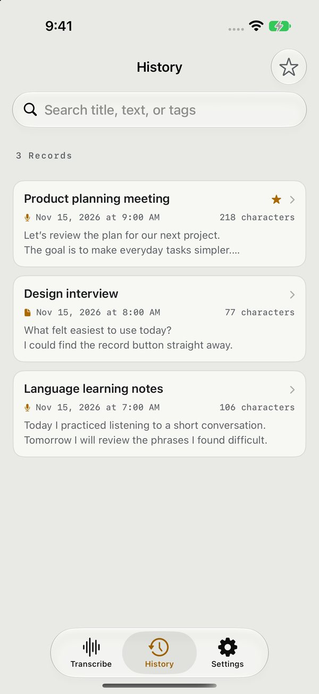

നിങ്ങളുടെ ശബ്ദം,നേരിട്ട് ടെക്സ്റ്റിലേക്ക്.
ഒരു മീറ്റിംഗ്, ലക്ചർ അല്ലെങ്കിൽ അഭിമുഖം റെക്കോർഡ് ചെയ്യുക — അല്ലെങ്കിൽ ഒരു ഓഡിയോ അല്ലെങ്കിൽ വീഡിയോ ഫയൽ ഇമ്പോർട്ട് ചെയ്യുക — നിങ്ങളുടെ iPhone അല്ലെങ്കിൽ iPad-ൽ തന്നെ ട്രാൻസ്ക്രിപ്റ്റ് നേടുക.
പിന്തുണയുള്ള iOS 26+ ഉപകരണങ്ങളിൽ റെക്കോർഡ് ചെയ്യുമ്പോൾ ലൈവ് ട്രാൻസ്ക്രിപ്ഷൻ ലഭിക്കും. iOS 26+-ൽ Apple Intelligence ഓൺ ആണെങ്കിൽ, ട്രാൻസ്ക്രിപ്റ്റ് ചാറ്റിൽ AI സംഗ്രഹം ആവശ്യപ്പെടാം.
- എല്ലാ ഫീച്ചറുകളും സൗജന്യം
- പരസ്യങ്ങളില്ല
- ഇൻ-ആപ്പ് പർച്ചേസുകളില്ല
- അക്കൗണ്ട് ഇല്ല
- iPhone & iPad
എല്ലാ ഫീച്ചറുകളും, സൗജന്യം.
പണമടച്ചുള്ള പ്ലാനുകളൊന്നുമില്ല. ഈ പേജിൽ ലിസ്റ്റ് ചെയ്തിട്ടുള്ള എല്ലാം — റെക്കോർഡിംഗ്, ഫയൽ ഇമ്പോർട്ട്, എല്ലാ Whisper മോഡലുകളും, എക്സ്പോർട്ട്, ഹിസ്റ്ററി, ടാഗുകൾ, Apple Intelligence ചാറ്റ്, Shortcuts എന്നിവ — സൗജന്യമായി ലഭ്യമാണ്. നിങ്ങൾക്ക് അക്കൗണ്ട് സൃഷ്ടിക്കേണ്ടതില്ല, ആപ്പ് പരസ്യങ്ങൾ കാണിക്കുകയുമില്ല.
- സബ്സ്ക്രിപ്ഷനോ ഒറ്റത്തവണ പർച്ചേസോ ഇല്ല
- ഇൻ-ആപ്പ് പർച്ചേസുകളോ ലോക്ക് ചെയ്ത ഫീച്ചറുകളോ ഇല്ല
- പരസ്യങ്ങളില്ല, തേർഡ്-പാർട്ടി ട്രാക്കിംഗുമില്ല
- സൈൻ-അപ്പോ ലോഗിനോ ആവശ്യമില്ല
- റെക്കോർഡിംഗ് ദൈർഘ്യത്തിലോ ഫയലുകളുടെ എണ്ണത്തിലോ ആപ്പ് പരിധി വെക്കുന്നില്ല — ഉപകരണത്തിന്റെ സ്റ്റോറേജ്, മെമ്മറി, ബാറ്ററി എന്നിവ ബാധകമാണ്
ഓഡിയോയിൽ നിന്ന് ട്രാൻസ്ക്രിപ്റ്റിലേക്ക്
റെക്കോർഡ് ചെയ്യുക അല്ലെങ്കിൽ ഇമ്പോർട്ട് ചെയ്യുക
മൈക്രോഫോൺ ഉപയോഗിച്ച് റെക്കോർഡ് ചെയ്യാൻ ടാപ്പ് ചെയ്യുക, അല്ലെങ്കിൽ Files അല്ലെങ്കിൽ Photos-ൽ നിന്ന് ഒരു ഓഡിയോ അല്ലെങ്കിൽ വീഡിയോ ഫയൽ തിരഞ്ഞെടുക്കുക. റെക്കോർഡിംഗിനിടയിൽ പോസ് ചെയ്യാനും വീണ്ടും തുടരാനും കഴിയും.
വായിക്കുക, എഡിറ്റ് ചെയ്യുക, എക്സ്പോർട്ട് ചെയ്യുക
ടൈംസ്റ്റാമ്പുകളോടൊപ്പം ടെക്സ്റ്റ് പരിശോധിക്കുക, തെറ്റുകൾ തിരുത്തുക, തുടർന്ന് TXT, CSV, JSON അല്ലെങ്കിൽ SRT സബ്ടൈറ്റിലുകളായി ഷെയർ ചെയ്യുക.
നിങ്ങൾക്ക് ഇതിൽ എന്തെല്ലാം ചെയ്യാം
ആപ്പിന്റെ പ്രധാന ഭാഗങ്ങളിലേക്ക് ഒരു അടുത്ത നോട്ടം.
റെക്കോർഡ് ചെയ്യുക അല്ലെങ്കിൽ സ്വന്തം ഫയലുകൾ കൊണ്ടുവരുക
ഒരു ടാപ്പിലൂടെ റെക്കോർഡിംഗ് തുടങ്ങുക, അല്ലെങ്കിൽ നിങ്ങളുടെ കൈവശമുള്ള ഫയൽ ഇമ്പോർട്ട് ചെയ്യുക. ആപ്പ് ഓഡിയോ കൺവേർട്ട് ചെയ്ത് ഉപകരണത്തിൽ തന്നെ ട്രാൻസ്ക്രൈബ് ചെയ്യുന്നു.
- പോസ്, റെസ്യൂം സൗകര്യമുള്ള മൈക്രോഫോൺ റെക്കോർഡിംഗും എക്സ്റ്റേണൽ മൈക്കുകൾക്കുള്ള മൈക്രോഫോൺ സ്വിച്ചറും
- പിന്തുണയുള്ള iPhone-കളിൽ Live Activity വഴി ലോക്ക് സ്ക്രീനിലും Dynamic Island-ലും റെക്കോർഡിംഗ് സ്റ്റാറ്റസ്
- Files ആപ്പിൽ നിന്ന് M4A, WAV, MP3, MP4, MOV തുടങ്ങിയ ഓഡിയോ, വീഡിയോ ഫയലുകൾ ഇമ്പോർട്ട് ചെയ്യുക
- നിങ്ങളുടെ Photos ലൈബ്രറിയിൽ നിന്ന് നേരിട്ട് വീഡിയോ തിരഞ്ഞെടുക്കുക
- ദീർഘനേരത്തെ റെക്കോർഡിംഗുകൾക്കായി ഓപ്ഷണൽ "Keep Screen On"

Whisper, നിങ്ങളുടെ ഉപകരണത്തിൽ പ്രവർത്തിക്കുന്നു
ലഭ്യമായ ഇടങ്ങളിൽ Metal GPU ആക്സിലറേഷനോടൊപ്പം whisper.cpp വഴി OpenAI-യുടെ ഓപ്പൺ Whisper മോഡലുകൾ ആപ്പ് ഉപയോഗിക്കുന്നു. മറ്റൊരു മോഡൽ തിരഞ്ഞെടുത്ത് നിങ്ങൾക്ക് വേഗതയും കൃത്യതയും തമ്മിൽ ക്രമീകരിക്കാം.
- 10 Whisper മോഡലുകൾ, Tiny (ഏകദേശം 15 MB) മുതൽ Large v3 Turbo, Medium (ഏകദേശം 1.5 GB വരെ)
- ഓട്ടോമാറ്റിക് ഭാഷാ തിരിച്ചറിയൽ, അല്ലെങ്കിൽ 18 ഭാഷകളിൽ നിന്ന് തിരഞ്ഞെടുക്കാം
- ഫലം ഇംഗ്ലീഷിലേക്ക് വിവർത്തനം ചെയ്യാനുള്ള ഓപ്ഷൻ
- പിന്തുണയുള്ള ഉപകരണങ്ങളിൽ പ്രോസസ്സിംഗ് വേഗത്തിലാക്കാൻ സഹായിക്കുന്ന ഓപ്ഷണൽ Core ML എൻകോഡർ ഡൗൺലോഡ്
- iOS 26-ലും അതിന് ശേഷമുള്ള പതിപ്പുകളിലും Apple-ന്റെ ഓൺ-ഡിവൈസ് സ്പീച്ച് എഞ്ചിനും ബദലായി ലഭ്യമാണ്

ടൈംലൈൻ അല്ലെങ്കിൽ റീഡിംഗ് വ്യൂ
ലളിതമായ ടെക്സ്റ്റ് വ്യൂവും ടൈംസ്റ്റാമ്പുകളുള്ള ടൈംലൈൻ വ്യൂവും തമ്മിൽ മാറുക. എന്താണ് പറഞ്ഞതെന്ന് പരിശോധിക്കാൻ ഒറിജിനൽ ഓഡിയോ പ്ലേ ചെയ്യുക, ആവശ്യമെങ്കിൽ ടെക്സ്റ്റ് തിരുത്തുക.
- ഓപ്ഷണൽ ടൈംസ്റ്റാമ്പുകളുള്ള ടെക്സ്റ്റ്, ടൈംലൈൻ വ്യൂകൾ
- വേഗതയും സ്ഥാനവും ക്രമീകരിക്കാവുന്ന ഓഡിയോ പ്ലേബാക്ക്
- ട്രാൻസ്ക്രിപ്റ്റും അതിന്റെ തലക്കെട്ടും എഡിറ്റ് ചെയ്യുക
- ഒരു ഖണ്ഡികയോ മുഴുവൻ ടെക്സ്റ്റോ കോപ്പി ചെയ്യുക
- ട്രാൻസ്ക്രിപ്റ്റിനുള്ളിൽ തിരയുക

തിരയാവുന്ന ഹിസ്റ്ററി
എല്ലാ ട്രാൻസ്ക്രിപ്റ്റും നിങ്ങളുടെ ഉപകരണത്തിൽ സേവ് ചെയ്യപ്പെടുന്നതിനാൽ പിന്നീട് എപ്പോൾ വേണമെങ്കിലും തിരിച്ചുവന്ന് കാണാം.
- തലക്കെട്ട്, ടെക്സ്റ്റ് അല്ലെങ്കിൽ ടാഗ് വഴി തിരയുക
- പ്രിയപ്പെട്ടവയും ക്രമീകരണവും
- എല്ലാ ട്രാൻസ്ക്രിപ്റ്റുകളിലും ചേർക്കാനും പേര് മാറ്റാനും ലയിപ്പിക്കാനും നീക്കം ചെയ്യാനും കഴിയുന്ന ടാഗുകൾ
- ടാഗ് പ്രകാരം ഹിസ്റ്ററി ഫിൽട്ടർ ചെയ്യുക

ടെക്സ്റ്റ്, ഡാറ്റ അല്ലെങ്കിൽ സബ്ടൈറ്റിലുകൾ
അടുത്ത ഘട്ടത്തിന് അനുയോജ്യമായ ഫോർമാറ്റിൽ ട്രാൻസ്ക്രിപ്റ്റ് ഷെയർ ചെയ്യുക — നോട്ടുകൾ, സ്പ്രെഡ്ഷീറ്റ്, സ്ക്രിപ്റ്റ് അല്ലെങ്കിൽ വീഡിയോ എഡിറ്റർ.
- നോട്ടുകൾക്കും രേഖകൾക്കും TXT
- സ്പ്രെഡ്ഷീറ്റുകൾക്കായി CSV
- നിങ്ങളുടെ സ്വന്തം ടൂളുകൾക്കായി സെഗ്മെന്റുകളോടുകൂടിയ JSON
- വീഡിയോ എഡിറ്റിംഗിനായി SRT സബ്ടൈറ്റിലുകൾ
- ഒറിജിനൽ റെക്കോർഡിംഗ് ഓഡിയോ ഫയലായി ഷെയർ ചെയ്യുക
ട്രാൻസ്ക്രിപ്റ്റിനെക്കുറിച്ച് ചോദിക്കുക iOS 26+
Apple Intelligence പിന്തുണയുള്ള ഉപകരണങ്ങളിൽ നിങ്ങൾക്ക് ട്രാൻസ്ക്രിപ്റ്റുമായി ചാറ്റ് ചെയ്യാം — സംഗ്രഹം, പ്രധാന തീരുമാനങ്ങൾ അല്ലെങ്കിൽ ആക്ഷൻ ഇനങ്ങൾ എന്നിവ ആവശ്യപ്പെടാം — കൂടാതെ തലക്കെട്ട് സൃഷ്ടിക്കാം. ഓരോ ട്രാൻസ്ക്രിപ്റ്റിനുമൊപ്പം ചാറ്റുകൾ സേവ് ചെയ്യപ്പെടും. നീളമുള്ള ട്രാൻസ്ക്രിപ്റ്റുകൾ ഭാഗങ്ങളായി വായിക്കുന്നു. ഓപ്ഷണൽ Private Cloud Compute മോഡ് (iOS 27 അല്ലെങ്കിൽ അതിനുശേഷമുള്ളത്) ഡിഫോൾട്ടായി ഓഫ് ആണ്.
Shortcuts & Siri
റെക്കോർഡിംഗ് തുടങ്ങാനോ നിർത്താനോ, മീഡിയ ഫയൽ ട്രാൻസ്ക്രൈബ് ചെയ്യാനോ, ട്രാൻസ്ക്രിപ്ഷനുകൾ കണ്ടെത്താനോ, ട്രാൻസ്ക്രിപ്റ്റ് ടെക്സ്റ്റ് നേടാനോ, ടാഗുകളും പ്രിയപ്പെട്ടവയും ചേർക്കാനോ App Shortcuts ഉപയോഗിക്കുക — ഓട്ടോമേഷനുകൾക്ക് ഏറെ സഹായകം. ചില പ്രവർത്തനങ്ങൾക്ക് പുതിയ iOS പതിപ്പ് ആവശ്യമാണ്.
എല്ലാ ഫീച്ചറുകളും — എല്ലാം സൗജന്യം
ആപ്പ് നിലവിൽ നൽകുന്ന കാര്യങ്ങളുടെ പൂർണ്ണമായ പട്ടിക. ഇവിടെ ഒന്നിനും പണം നൽകേണ്ടതില്ല.
ക്യാപ്ചർ
- മൈക്രോഫോൺ റെക്കോർഡിംഗ്സൗജന്യം
- റെക്കോർഡിംഗ് പോസ് & റെസ്യൂംകോളുകൾ പോലെയുള്ള തടസ്സങ്ങളും റെക്കോർഡിംഗ് കൈകാര്യം ചെയ്യുന്നുസൗജന്യം
- മൈക്രോഫോൺ മാറ്റുകസൗജന്യം
- റെക്കോർഡിംഗ് സമയത്ത് Live Activityലോക്ക് സ്ക്രീനും Dynamic Island-ഉംസൗജന്യം
- ഓഡിയോ ഫയലുകൾ ഇമ്പോർട്ട് ചെയ്യുകM4A, WAV, MP3 മറ്റ് സാധാരണ ഫോർമാറ്റുകളുംസൗജന്യം
- വീഡിയോ ഫയലുകൾ ഇമ്പോർട്ട് ചെയ്യുകMP4, MOV മറ്റ് സാധാരണ ഫോർമാറ്റുകളുംസൗജന്യം
- Photos-ൽ നിന്ന് വീഡിയോ ഇമ്പോർട്ട് ചെയ്യുകസൗജന്യം
- Live Transcribeനിങ്ങൾ സംസാരിക്കുമ്പോൾ ടെക്സ്റ്റ് തെളിയുന്നു · iOS 26+സൗജന്യം
സ്പീച്ച് റെക്കഗ്നിഷൻ
- ഓൺ-ഡിവൈസ് Whisper (whisper.cpp)സൗജന്യം
- എല്ലാ 10 Whisper മോഡലുകളുംTiny, Base, Small, Medium, Large v3 Turbo, കോംപാക്റ്റ് വകഭേദങ്ങൾസൗജന്യം
- Apple ഓൺ-ഡിവൈസ് സ്പീച്ച് എഞ്ചിൻiOS 26+, ഭാഷകൾ iOS നിയന്ത്രിക്കുന്നുസൗജന്യം
- ഓട്ടോ-ഡിറ്റക്റ്റ് അല്ലെങ്കിൽ 18 ഭാഷകളിൽ നിന്ന് തിരഞ്ഞെടുക്കുകസൗജന്യം
- ഇംഗ്ലീഷിലേക്ക് വിവർത്തനം ചെയ്യുകസൗജന്യം
- Metal GPU ആക്സിലറേഷൻഉപകരണം പിന്തുണയ്ക്കുന്നിടത്ത്സൗജന്യം
- Core ML എൻകോഡർ (ഓപ്ഷണൽ ഡൗൺലോഡ്)സൗജന്യം
കൃത്യത & പെർഫോമൻസ് ടൂളുകൾ
- നിശ്ശബ്ദ ഭാഗങ്ങൾ ഒഴിവാക്കുകവോയ്സ് ആക്ടിവിറ്റി ഡിറ്റക്ഷൻ (VAD)സൗജന്യം
- ഓഡിയോ ശുദ്ധീകരിക്കുകനോയ്സ് കുറയ്ക്കലും വോളിയം നോർമലൈസേഷനുംസൗജന്യം
- പദസഞ്ചയ സൂചനകൾമോഡൽ പ്രതീക്ഷിക്കേണ്ട പേരുകളും പദങ്ങളുംസൗജന്യം
- Flash Attentionമെമ്മറി ഉപയോഗം കുറയ്ക്കാനും പ്രോസസ്സിംഗ് വേഗത്തിലാക്കാനും സഹായിക്കാംസൗജന്യം
- ടൈംസ്റ്റാമ്പുകൾ ഉൾപ്പെടുത്തുകസൗജന്യം
വായന & എഡിറ്റിംഗ്
- ടെക്സ്റ്റ് വ്യൂവും ടൈംലൈൻ വ്യൂവുംസൗജന്യം
- വേഗ നിയന്ത്രണത്തോടെയുള്ള ഓഡിയോ പ്ലേബാക്ക്സൗജന്യം
- ട്രാൻസ്ക്രിപ്റ്റ് ടെക്സ്റ്റും തലക്കെട്ടും എഡിറ്റ് ചെയ്യുകസൗജന്യം
- ഖണ്ഡികയോ മുഴുവൻ ടെക്സ്റ്റോ കോപ്പി ചെയ്യുകസൗജന്യം
- ട്രാൻസ്ക്രിപ്റ്റിനുള്ളിൽ തിരയുകസൗജന്യം
ഹിസ്റ്ററി & ഓർഗനൈസേഷൻ
- സേവ് ചെയ്ത ട്രാൻസ്ക്രിപ്ഷൻ ഹിസ്റ്ററിസൗജന്യം
- തലക്കെട്ട്, ടെക്സ്റ്റ് അല്ലെങ്കിൽ ടാഗ് വഴി തിരയുകസൗജന്യം
- പ്രിയപ്പെട്ടവയും ക്രമീകരണവുംസൗജന്യം
- ടാഗുകൾ: ചേർക്കുക, പേര് മാറ്റുക, ലയിപ്പിക്കുക, നീക്കം ചെയ്യുകസൗജന്യം
- ടാഗ് പ്രകാരം ഫിൽട്ടർ ചെയ്യുകസൗജന്യം
എക്സ്പോർട്ട് & ഷെയർ
- ടെക്സ്റ്റ് (.txt)സൗജന്യം
- CSV (.csv)സൗജന്യം
- JSON (.json)സൗജന്യം
- സബ്ടൈറ്റിലുകൾ (.srt)സൗജന്യം
- ഒറിജിനൽ ഓഡിയോ ഷെയർ ചെയ്യുകസൗജന്യം
- ഷെയർ ഷീറ്റ് വഴി ടെക്സ്റ്റ് ഷെയർ ചെയ്യുകസൗജന്യം
Apple Intelligence
- ട്രാൻസ്ക്രിപ്റ്റിനെക്കുറിച്ച് ചാറ്റ് ചെയ്യുകപിന്തുണയുള്ള ഉപകരണങ്ങളിൽ iOS 26+സൗജന്യം
- ഓരോ ട്രാൻസ്ക്രിപ്റ്റിനും സേവ് ചെയ്ത ചാറ്റ് ഹിസ്റ്ററിസൗജന്യം
- തലക്കെട്ട് സൃഷ്ടിക്കുകസൗജന്യം
- Private Cloud Compute മോഡ്ഓപ്ഷണൽ · iOS 27+ · ഡിഫോൾട്ടായി ഓഫ്സൗജന്യം
ഓട്ടോമേഷൻ & ആപ്പ്
- Shortcuts & Siri പ്രവർത്തനങ്ങൾസൗജന്യം
- iPhone, iPad ലേഔട്ടുകൾസൗജന്യം
- ലൈറ്റ്, ഡാർക്ക് അല്ലെങ്കിൽ സിസ്റ്റം തീംസൗജന്യം
- 11 ഭാഷകളിൽ ഇന്റർഫേസ്സൗജന്യം
- മോഡലും സ്റ്റോറേജ് മാനേജ്മെന്റുംസൗജന്യം
iOS പതിപ്പ് അടയാളപ്പെടുത്തിയ ഫീച്ചറുകൾക്ക് ആ പതിപ്പോ അതിന് ശേഷമുള്ളതോ ആവശ്യമാണ്. Apple Intelligence ഫീച്ചറുകൾ ഉപകരണ പിന്തുണ, പ്രദേശം, ഭാഷാ ക്രമീകരണങ്ങൾ എന്നിവയെയും ആശ്രയിച്ചിരിക്കുന്നു.
നിങ്ങളുടെ ഓഡിയോ ഉപകരണത്തിൽ തന്നെ സൂക്ഷിക്കാൻ രൂപകൽപ്പന ചെയ്തത്
Whisper ട്രാൻസ്ക്രിപ്ഷൻ ലോക്കലായി പ്രവർത്തിക്കുന്നു. ആപ്പിൽ പരസ്യങ്ങളോ അനലിറ്റിക്സ് SDK-കളോ തേർഡ്-പാർട്ടി ട്രാക്കിംഗോ ഇല്ല, കൂടാതെ ഇത് നിങ്ങളുടെ ഓഡിയോയോ ട്രാൻസ്ക്രിപ്റ്റുകളോ ഡെവലപ്പർക്ക് അയയ്ക്കുന്നില്ല.
നിങ്ങളുടെ ഉപകരണത്തിൽ തന്നെ തുടരുന്നു
റെക്കോർഡിംഗുകൾ, ഇമ്പോർട്ട് ചെയ്ത മീഡിയ, ട്രാൻസ്ക്രിപ്റ്റുകൾ, ടാഗുകൾ, ചാറ്റുകൾ, ക്രമീകരണങ്ങൾ എന്നിവ നിങ്ങളുടെ ഉപകരണത്തിലെ ആപ്പിൽ സംഭരിച്ചിരിക്കുന്നു. ആപ്പിൽ നിന്ന് എപ്പോൾ വേണമെങ്കിലും നിങ്ങൾക്ക് ഇവ നീക്കം ചെയ്യാം.
ആപ്പ് എപ്പോൾ കണക്ട് ചെയ്യുന്നു
Hugging Face-ൽ നിന്ന് Whisper, VAD, Core ML മോഡൽ ഫയലുകൾ ഡൗൺലോഡ് ചെയ്യാനും; പുതിയ പതിപ്പിനായി App Store പരിശോധിക്കാനും; Apple-ന്റെ എഞ്ചിനായി iOS സ്പീച്ച് മോഡലുകൾ ഡൗൺലോഡ് ചെയ്യുമ്പോഴും മാത്രം.
നിങ്ങളുടെ തിരഞ്ഞെടുപ്പ്
Apple Intelligence-നുള്ള Private Cloud Compute ഡിഫോൾട്ടായി ഓഫ് ആണ്. നിങ്ങൾ ഇത് ഓൺ ചെയ്താൽ, ട്രാൻസ്ക്രിപ്റ്റ് ടെക്സ്റ്റും നിങ്ങളുടെ ചോദ്യവും Apple-ന്റെ Private Cloud Compute പ്രോസസ്സ് ചെയ്യും. ഒരു എക്സ്പോർട്ട് ഷെയർ ചെയ്യുമ്പോൾ അത് നിങ്ങൾ തിരഞ്ഞെടുക്കുന്ന ഇടത്തേക്ക് പോകുന്നു.
തുടങ്ങുന്നതിന് മുമ്പ്
ഉപകരണവും സിസ്റ്റവും
iOS / iPadOS 17.0 അല്ലെങ്കിൽ അതിന് ശേഷമുള്ള പതിപ്പുള്ള iPhone അല്ലെങ്കിൽ iPad. Live Transcribe, Apple-ന്റെ സ്പീച്ച് എഞ്ചിൻ, ഓൺ-ഡിവൈസ് Apple Intelligence എന്നിവയ്ക്ക് iOS 26 അല്ലെങ്കിൽ അതിന് ശേഷമുള്ള പതിപ്പ് വേണം; Private Cloud Compute-ന് iOS 27 അല്ലെങ്കിൽ അതിന് ശേഷമുള്ളത് ആവശ്യമാണ്.
സ്റ്റോറേജും നെറ്റ്വർക്കും
ഒരു മോഡൽ ഡൗൺലോഡ് ചെയ്യാൻ ഇന്റർനെറ്റ് കണക്ഷനും ഒഴിവുള്ള സ്റ്റോറേജും ആവശ്യമാണ് (മോഡൽ അനുസരിച്ച് ഏകദേശം 15 MB മുതൽ 1.5 GB വരെ). റെക്കോർഡിംഗിന് മൈക്രോഫോൺ അനുമതി ആവശ്യമാണ്.
പതിവായി ചോദിക്കുന്ന ചോദ്യങ്ങൾ
ഈ ആപ്പ് ശരിക്കും സൗജന്യമാണോ?
അതെ. നിലവിൽ എല്ലാ ഫീച്ചറുകളും ഉപയോഗിക്കാൻ സൗജന്യമാണ്. പരസ്യങ്ങളോ ഇൻ-ആപ്പ് പർച്ചേസുകളോ സബ്സ്ക്രിപ്ഷനുകളോ അക്കൗണ്ട് സൈൻ-അപ്പോ ഇല്ല.
ഇത് ഓഫ്ലൈനിൽ പ്രവർത്തിക്കുമോ?
Whisper ട്രാൻസ്ക്രിപ്ഷൻ നിങ്ങളുടെ ഉപകരണത്തിൽ പ്രവർത്തിക്കുന്നതിനാണ് രൂപകൽപ്പന ചെയ്തിരിക്കുന്നത്. മോഡൽ ഡൗൺലോഡ് ചെയ്യാൻ ഒരു തവണ ഇന്റർനെറ്റ് കണക്ഷൻ വേണം; അതിനുശേഷം ആ മോഡൽ ഉപയോഗിച്ച് റെക്കോർഡ് ചെയ്യാനും ട്രാൻസ്ക്രൈബ് ചെയ്യാനും സാധാരണയായി കണക്ഷൻ ആവശ്യമില്ല. മറ്റ് മോഡലുകൾ ഡൗൺലോഡ് ചെയ്യാനും അപ്ഡേറ്റുകൾ പരിശോധിക്കാനും ഓപ്ഷണൽ Private Cloud Compute മോഡിനും കണക്ഷൻ ആവശ്യമാണ്.
എന്റെ ഓഡിയോ സെർവറിലേക്ക് അയയ്ക്കുന്നുണ്ടോ?
Whisper ട്രാൻസ്ക്രിപ്ഷൻ ലോക്കലായി പ്രവർത്തിക്കുന്നു, ആപ്പ് നിങ്ങളുടെ ഓഡിയോയോ ട്രാൻസ്ക്രിപ്റ്റുകളോ ഡെവലപ്പർക്ക് അയയ്ക്കുന്നില്ല. നിങ്ങളുടെ നിയന്ത്രണത്തിലുള്ള ഏക അപവാദം Apple Intelligence ചാറ്റിനുള്ള ഓപ്ഷണൽ Private Cloud Compute മോഡാണ്; അത് ട്രാൻസ്ക്രിപ്റ്റ് ടെക്സ്റ്റും നിങ്ങളുടെ ചോദ്യവും Apple-ന്റെ Private Cloud Compute-ലേക്ക് അയയ്ക്കുന്നു. ഇത് ഡിഫോൾട്ടായി ഓഫ് ആണ്.
ഏതൊക്കെ ഫയലുകൾ ഇമ്പോർട്ട് ചെയ്യാനും എക്സ്പോർട്ട് ചെയ്യാനും കഴിയും?
Files-ൽ നിന്ന് M4A, WAV, MP3, MP4, MOV പോലുള്ള സാധാരണ ഓഡിയോ, വീഡിയോ ഫോർമാറ്റുകളും Photos-ൽ നിന്ന് വീഡിയോകളും നിങ്ങൾക്ക് ഇമ്പോർട്ട് ചെയ്യാം. ട്രാൻസ്ക്രിപ്റ്റുകൾ TXT, CSV, JSON അല്ലെങ്കിൽ SRT ആയി എക്സ്പോർട്ട് ചെയ്യാം, കൂടാതെ റെക്കോർഡിംഗുകൾ ഓഡിയോ ഫയലുകളായി ഷെയർ ചെയ്യാം.
ഏതൊക്കെ ഭാഷകൾ പിന്തുണയ്ക്കുന്നു?
ട്രാൻസ്ക്രിപ്ഷനായി നിങ്ങൾക്ക് ഓട്ടോമാറ്റിക് ഡിറ്റക്ഷൻ ഉപയോഗിക്കാം അല്ലെങ്കിൽ ഇംഗ്ലീഷ്, ജാപ്പനീസ്, ചൈനീസ്, കൊറിയൻ, സ്പാനിഷ്, ഫ്രഞ്ച്, ജർമ്മൻ, ഇറ്റാലിയൻ, പോർച്ചുഗീസ്, റഷ്യൻ, അറബിക്, ഹിന്ദി, ഡച്ച്, പോളിഷ്, ടർക്കിഷ്, വിയറ്റ്നാമീസ്, തായ് അല്ലെങ്കിൽ ഇന്തോനേഷ്യൻ എന്നിവയിൽ നിന്ന് തിരഞ്ഞെടുക്കാം. ഭാഷ അനുസരിച്ച് ഫലങ്ങൾ വ്യത്യാസപ്പെടാം. ആപ്പിന്റെ ഇന്റർഫേസ് 11 ഭാഷകളിൽ ലഭ്യമാണ്.
വീഡിയോയ്ക്ക് സബ്ടൈറ്റിലുകൾ സൃഷ്ടിക്കാൻ കഴിയുമോ?
അതെ. വീഡിയോ ഇമ്പോർട്ട് ചെയ്യുക, ട്രാൻസ്ക്രൈബ് ചെയ്യുക, തുടർന്ന് SRT ആയി എക്സ്പോർട്ട് ചെയ്യുക. മിക്ക വീഡിയോ എഡിറ്ററുകൾക്കും SRT ഫയലുകൾ ഇമ്പോർട്ട് ചെയ്യാൻ കഴിയും. സബ്ടൈറ്റിൽ ടൈമിംഗ് തിരിച്ചറിഞ്ഞ സെഗ്മെന്റുകളെ പിന്തുടരുന്നതിനാൽ, നിങ്ങളുടെ എഡിറ്ററിൽ ആവശ്യാനുസരണം അത് ക്രമീകരിക്കാം.
ഒരു റെക്കോർഡിംഗിന് എത്ര ദൈർഘ്യമുണ്ടാകാം?
ആപ്പ് ഒരു നിശ്ചിത പരിധി വെക്കുന്നില്ല. പ്രായോഗികമായി, വളരെ നീളമുള്ള ഓഡിയോ നിങ്ങളുടെ ഉപകരണത്തിലെ ഒഴിവുള്ള സ്റ്റോറേജ്, മെമ്മറി, ബാറ്ററി എന്നിവയെ ആശ്രയിച്ചിരിക്കുന്നു; വലിയ മോഡലുകൾക്ക് കൂടുതൽ സമയമെടുക്കും. നീളമുള്ള ഫയൽ പരാജയപ്പെടുകയാണെങ്കിൽ, ചെറിയ മോഡലോ Flash Attention-ഓ സഹായകമായേക്കാം.
ഇത് ഔദ്യോഗിക OpenAI ആപ്പാണോ?
അല്ല. ഓപ്പൺ-സോഴ്സ് whisper.cpp പ്രോജക്റ്റ് വഴി OpenAI-യുടെ തുറന്നുനൽകിയ Whisper മോഡലുകൾ പ്രവർത്തിപ്പിക്കുന്ന ഒരു സ്വതന്ത്ര ആപ്പാണിത്. ഇത് OpenAI-യുമായി ബന്ധമുള്ളതോ അവർ അംഗീകരിച്ചതോ അല്ല.